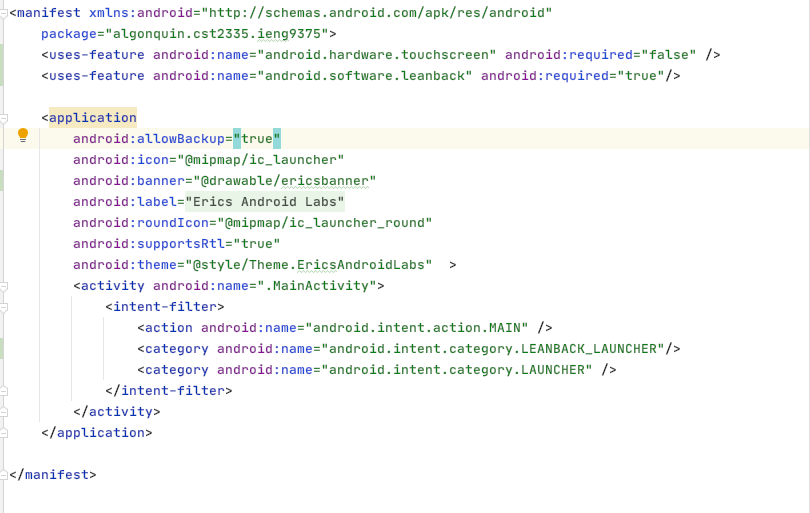
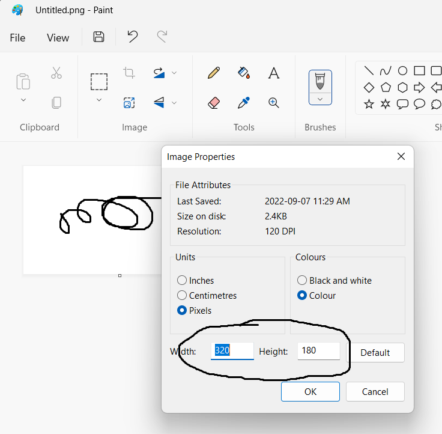
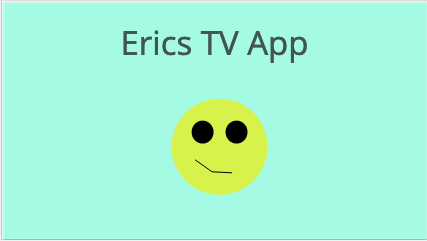
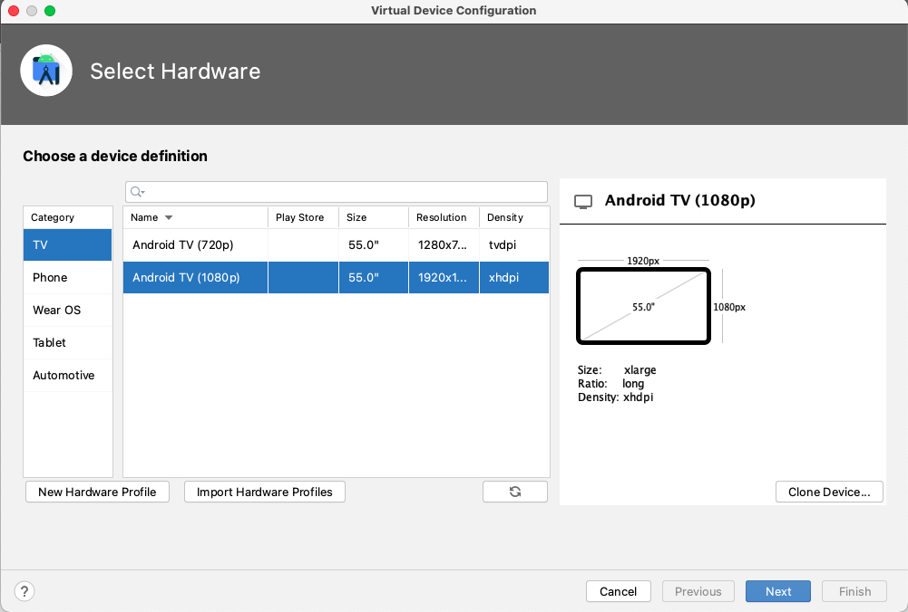
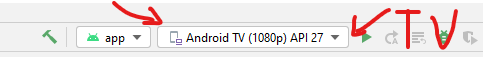
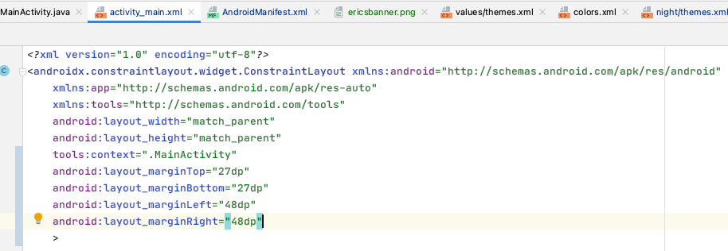
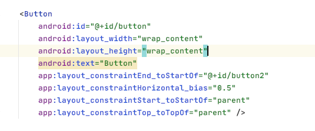
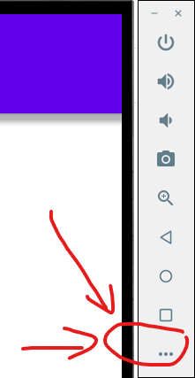
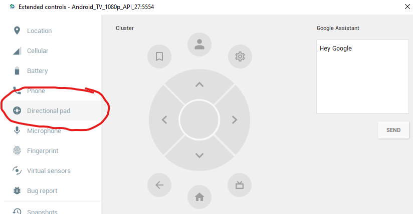

You can think of an Android TV as just a large phone or tablet. An Android TV still runs Android, but it doesn't have a touch screen. Also, TVs typically have a resolution of 1920x1080, or maybe 4k screens. Before you continue, make a branch of your code called "Week3_TV", and make sure you checkout your new branch. We're going to create an new optional way of building this software based on what you've already done.
Android TVs don't have a touch screen, so you have to add this line to the manifest:
<uses-feature android:name="android.hardware.touchscreen" android:required="false" />
Also, Google has created a library of colours and fonts that look good on large screen displays, so you should require your app to use this as well by putting this line in the manifest:
<uses-feature android:name="android.software.leanback" android:required="true"/>
To tell your AndroidManifest which Activity to launch on a TV device, add this line:
<category android:name="android.intent.category.LEANBACK_LAUNCHER" />
It should go right below the other <category> tag in your MainActivity declaration.
Lastly, your TV app doesn't use Icons, but instead has a larger picture that gets installed on the TV's home screen. In addition to android:icon="@drawable/...", you should add: "android:banner="@drawable/... " followed by a larger picture that is 320 x 180 pixels. Use Microsoft Paint or Gimp to create your own PNG file. Make sure that the image doesn't have a transparency channel (uses 24-bit graphics instead of 32-bit).
Some TVs don't show the whole screen size properly so you should add some margins around the top, bottom, left and right sides. The top and bottom should have a 27 pixel margin, and the left and right sides should have a 48 pixel margin.
Add the two XML tags to your manifest that are mentioned in the Theory part. In the end, your manifest should now look like this:

Use Windows Paint to create a banner image for your TV app. Make sure it's 320 x 180 pixels by clicking File menu and selecting "Image Properties": 

Now create an Android TV virtual device by clicking on the Tools menu, then "AVD Manager". Click on "Create Virtual Device", and select the 1080p device:

You should use the Android 8.1 image but the TV images are only in x86 32-bit format. Download this image and click Finish. Once your virtual device is created, select your TV from the list of devices and click on debug to make sure that your app runs.

Add a margin around the edge of your layout file. Some TVs don't scale the image properly for some images, so put margins around the edge of the root ConstraintLayout:
android:layout_marginTop="27dp"
android:layout_marginBottom="27dp"
android:layout_marginLeft="48dp"
android:layout_marginRight="48dp"
You can delete the 32 pixel margins you had for your buttons to the parent. Your activity_main.xml layout should look like this:

Lastly, since there isn't a touch screen on a TV, you have to navigate your widgets using the direction pad (D-pad) on a TV remote. At first, the top most widget will be selected, but you then have to give the IDs of which Widget will be next if you click the up, down, left or right arrows. Look at the first Button in your layout:

Now add these parameters to the button:
android:nextFocusUp="@id/..." and put the id of the widget that should be selected if the user clicks on the up direction.
android:nextFocusDown="@id/..." and put the id of the widget that should be selected if the user clicks the down direction.
android:nextFocusRight="@id/... " this is for pressing the right direction
android:nextFocusLeft="@id/... " this is for pressing the left direction
For each of the buttons, if you select the down arrow, the switch should be selected.
For each button, if you press on the right arrow, the button to the right should be selected. If it's the last button on the right, then pressing the right arrow should cycle around and make the first button selected. Do the same for the left arrow, where the button to the left is selected, and the first button cycles around to the third button.
For each button, pressing up shouldn't do anything. You do this by deleting the "nextFocusUp" parameter. On the switch, selecting the left, right, and down arrows shouldn't do anything.
Now debug your application and make sure that the switch still rotates the flag when you turn it on or off. You can find the d-pad controls by clicking on the " ... " button on the right of the emulator:

Then select the "direction pad" on the left. Click on the arrows to test your interface, and the circle in the middle of the arrows is the "select" button.

You should see this:
Commit your work to your Week3_TV branch and you are finished this lab. Make sure to push BOTH branches to your github account: Week3 and Week3_TV
When you are finished, demonstrate your lab work to your lab professor, showing that you have created two branches and that you can switch from one branch to another and everything works properly.
| Item | Marks |
|---|---|
| You have 3 buttons chained horizontally, 32 pixels from the top of the screen | (3 marks) |
| Your flag ImageView is 32 pixels below the top row of buttons | (1 mark) |
| Your flag changes when you change the phone's language. | (1 mark) |
| Your switch starts and stops the rotation of the ImageView. | (1 mark) |
| Your app has a TV version on a second branch. | (2 marks) |
| You are able to navigate the interface using the D-pad arrows in the TV remote. | (2 marks) |